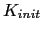

Next: Multichannel Processing for Meetings Up: Cluster Purification Algorithms Previous: Frame-Based Purification Implementation Contents
There are some situations where a cluster retains speaker segments from more than one speaker; the segment-level cluster purification algorithm is a proposed mechanism used to force splitting these cluster into two parts. The algorithm detects the segments in each cluster that are likely to belong to another speaker and reassigns one of them to a new cluster in each iteration of the agglomerative clustering algorithm. The algorithm works as follows:
In order to avoid instability, the algorithm is run at most  times ( being the number of initial clusters). Doing so avoids clusters continuously split and merge the same segments over and over.
user 2008-12-08